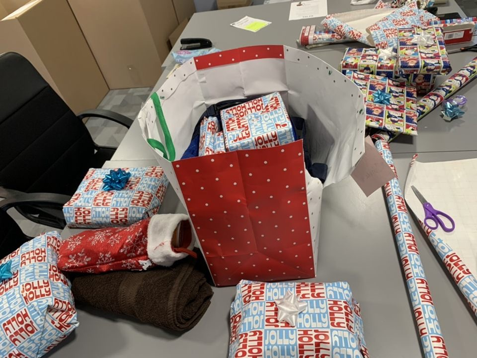

Check out some of the things we have done!

Our volunteers and the boys of Christ Child Society were able to bond and play basketball, soccer, have push-up contests, and play volleyball!
The older kids wanted to see what the University of Michigan campus looked like, so we organized a little tour for them! Of course, we showed them all the cool spots and took them out for lunch after.
Our SUNNY members took the kids out to have a little fun at the Apple Orchard! We went on hay rides and picked out the best pumpkins!

The annual hay ride at Wiard's Orchards with a Trunk-Or-Treat afterwards.

Some of the boys at an ice skating event hosted by SUNNY at Campus Martius in Detroit. We also walked around the square and paid a visit to Santa!
Every holiday season SUNNY members fulfill the children's christmas wish lists and deliver the wrapped gifts to the homes.

Our SUNNY members attending a Speaker Series, in which foster care professionals come to speak about their experiences and raise awareness about the struggles that foster children face.
Baked goods are much sweeter when proceeds are for a great cause. University of Michigan Sunny volunteers aim to raise money and awareness by selling items in Angel Hall.

The children of Christ Child Society and our volunteers enjoyed a trip to the Detroit Historical Museum in honor of Black History Month! We made crafts, looked at local Detroit vendors, and toured the museum.
One of the first events SUNNY ever hosted - building robots with the children at Christ Child!